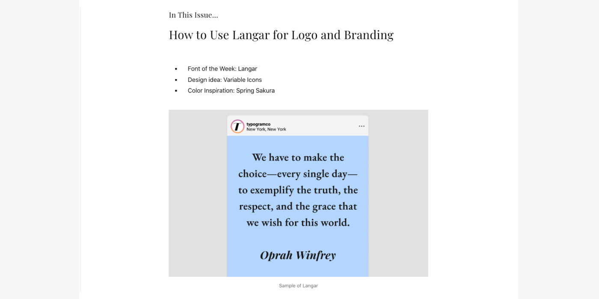
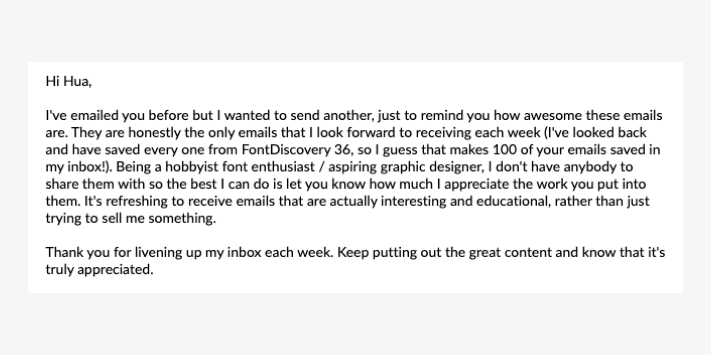
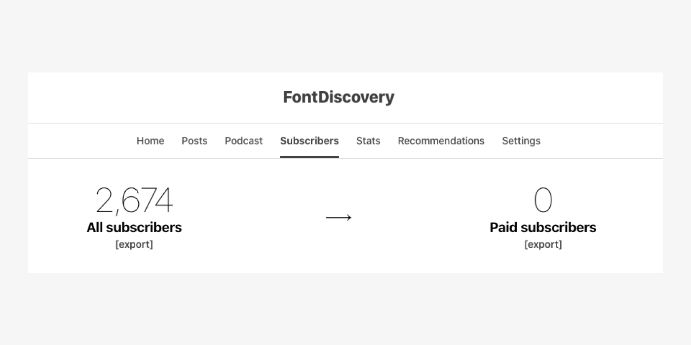
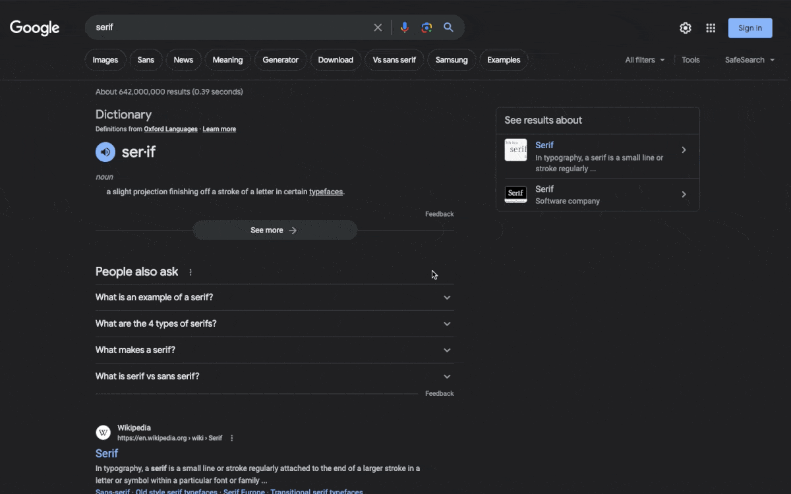
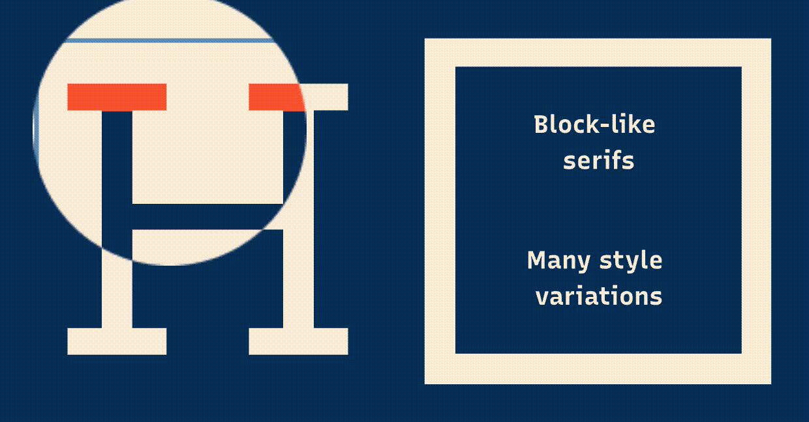

Designing FontDiscovery Newsletter
Developing Growth-oriented Content
In this post, I want to highlight the process of developing FontDiscovery newsletter, an important content marketing and lead-generation tool for Typogram. FontDiscovery is a weekly newsletter launched before we even had a coded product. It was developed to gain insights about the type of design resource early-stage entrepreneurs prefer, so we can better understand how to create helpful materials for our product.

- The Problem → Context & Background
- Assumptions → Questions We Are Trying to Answer
- Round 1 → Birth of FontDiscovery • Learnings & Results
- Round 2 → Expanding into Lead Gen • Learnings & Results

Context/ Background
With these thoughts in mind, we decided to create a design newsletter with a weekly sending schedule - this way, it gives us more exposure to our potential users and allows us to experiment with the format continuously.
Our Assumptions
- Early-stage founder enjoys weekly newsletter
- Early-stage founders want to learn about design through a weekly newsletter
- We can translate our content from the newsletter into learning materials feature inside the app
Questions We Are Trying to Answer
- What design topics are early-stage entrepreneurs interested in?
- What do those materials look like, content-wise?
We collected and organized all the questions into marketing, design, typography, and branding categories. Two potential directions for this newsletter emerged: We could develop a broad newsletter covering a wide selection of design topics across different categories or a niche newsletter targeting one specific design topic.
Birth of FontDiscovery
- Introducing the writer to a great font that is free and open-sourced
- Highlight why this font is fantastic for branding
- How to use this font with visual examples
Open rate for one of the first issues of FontDiscovery
The first issues primarily featured a weekly font and explained its history and usage through visual example
Results & Learnings
- A continuous 40% open rate in the first months shows the content and format work
- Steady growth of weekly subscribers by distributing our content in relevant entrepreneurship communities
- Partnered up with Indie Hackers to distribute the newsletter as a series
- FontDiscovery was featured on Hackernoon and won a Noonie award for Creativity
Expanding FontDiscovery into an Integrated Growth Tool
Over the next 12 months, the newsletter had excellent growth and open rate. FontDiscovery had over 2,500 subscribers and was featured on several top websites of our niche, including Product Hunt.
A happy moment: one of the nicest notes I got from my newsletter reader! : )
We started aligning fonts of the week to fonts in our logo design app, funneling content from Typogram’s blog to the design section of the newsletter to build brand awareness. At the same time, we started posting older newsletter issues back to the blog, targeting low-volume keywords of our niche to improve SEO for our website. This brought us about 1.5 - 2k monthly organic traffic.
The big moment came when we launched the pre-order for the app: our newsletter subscribers were ready to support us, and about 10% of the initial customers came from the newsletters, proving this strategy to be a success.
FontDiscovery archive on Typogram's blog for SEO
A pround moment: one of the post is ranked 6 on Google for the keyword "serif"
On the blog, we also feature interactive infographics explaining typography jargons
Results & Learnings
- Over 2.5k subscribers with no paid marketing
- Featured on Product Hunt as Community’s favorite newsletter, showing the content is working and reaching relevant communities
-
10% of customers from pre-orders were subscribers of our newsletters
-
1.5 - 2k monthly traffic from the newsletter archive
- Newsletter is an underestimated tool and channel for product marketing and development